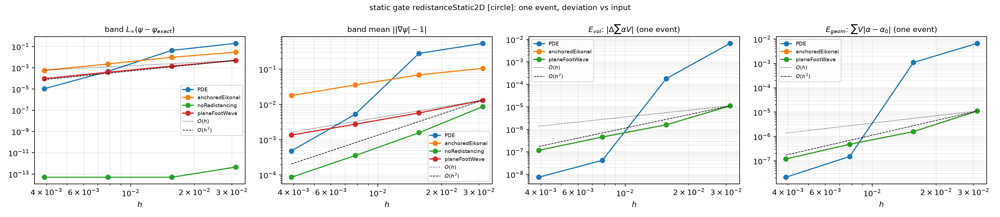
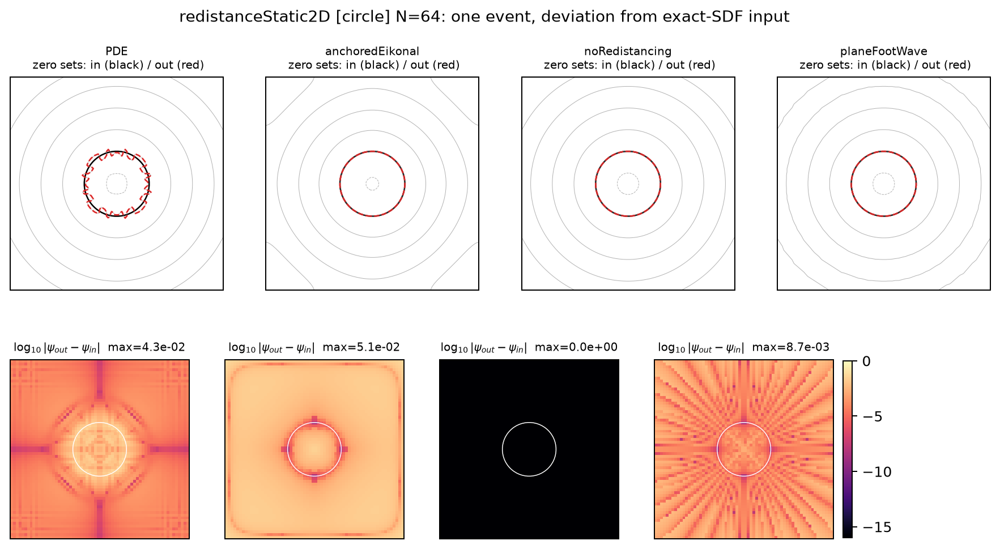

Geometrically redistanced level set
PDE advection · criterion-gated geometric redistancing from the indicator's own least-squares planes · 2D & 3D convergence
Tomislav Marić · Mathis Fricke · Dieter Bothe
MMA, TU Darmstadt
libleiaLevelSet | solver leiaRedistancedLevelSetFoam
| companion deck: grl-negative-results.template.html (every dead end, measured)
Navigation: → next part · ↓ slides within a part · Esc = overview.
Part 1 of 6
Part 2 of 6
anchors from the indicator's own LLS planes · a donor-plane MeshWave fill · a criterion that keeps events rare
Measured dead ends and their repairs: companion deck
grl-negative-results.
Per band cell \(c\) (sign-change cells), fit over the cell + face neighbours \(S_c\) (one matched halo exchange in parallel):
\[ (\mathbf{n}_c, d_c) = \arg\min \sum_{k\in S_c} \big(\psi_k - (\mathbf{n}\cdot\mathbf{x}_k + d)\big)^2 \]4×4 normal equations (2D: empty direction pinned); degenerate fits (\(|\mathbf{n}_c| \approx 0\)) are excluded.
Normalization is load-bearing: \(|\mathbf{n}_c|\) deviates from 1 by exactly the \(|\nabla\psi|\) drift being repaired. The Hesse-normal form
\[ \hat{\mathbf{n}}_c = \frac{\mathbf{n}_c}{|\mathbf{n}_c|}, \qquad \delta_c(\mathbf{x}) = \frac{\mathbf{n}_c\cdot\mathbf{x} + d_c}{|\mathbf{n}_c|} \]makes \(\delta_c\) the EXACT signed distance to the plane's zero set.
Shared code path: leastSquaresPlaneCoeffs()
(levelSetPlaneReconstruction.H) — the same call the
detrixheAslam indicator makes.
MeshWave/FaceCellWave orders donors by
foot distance (monotone, causal, \(\mathcal{O}(N)\), parallel-native);
the received value is
\[ \psi_{new} = \mathrm{sign}(\psi_{old})\,\big|(\mathbf{x}-\mathbf{f})\cdot\hat{\mathbf{n}}\big| \]// planeFootWaveRedistancer.C — seed the donor planes, wave, evaluate
forAll(anchors.bandCells, i)
{
const point& foot = anchors.bandFoot[i];
const vector& nHat = anchors.bandNHat[i];
for (const label faceI : mesh_.cells()[anchors.bandCells[i]])
{
const scalar dist2 = magSqr(Cf[faceI] - foot); // ordering metric
// ... per-face dedup: keep the smaller dist2 ...
seedInfo.append(wallPointData<vector>(foot, nHat, dist2));
}
}
MeshWave<wallPointData<vector>> wave(mesh_, seedFaces, seedInfo, nTotalCells+1);
forAll(psiIn, celli) // donor-plane evaluation
{
const scalar d = cellInfo[celli].valid(dummyTd)
? mag((C[celli] - cellInfo[celli].origin()) & cellInfo[celli].data())
: mag(psiOld[celli]); // unreached: keep old
psiIn[celli] = (psiOld[celli] >= 0) ? d : -d; // re-sign
}
forAll(anchors.cells, i) psiIn[anchors.cells[i]] = anchors.dist[i]; // exact anchorsNo parameters, no linear solves, no pseudo-time. One matched halo exchange (plane fits) + the parallel-native wave.
Reproduce: snakemake --workflow-profile profiles/local
--configfile config/redistanceCircle2D.yaml (or make studies-grl).
Part 3 of 6
leiaRedistancedLevelSetFoamPart 4 of 6
the two static gates decide; the advected studies measure what compounds
Input = exact signed distance (circle \(R=0.15\) centered; diagonal plane). Redistancing it must leave the interface position, the phase volume and the signed-distance profile unchanged — every deviation is the interface displacement of ONE redistancing step (the classical reinitialization concern, Sussman et al. / Russo–Smereka).

Reproduce: snakemake --workflow-profile profiles/local
--configfile config/redistanceStatic2D.yaml

Zero sets input (black) vs output (red, dashed) and
\(\log_{10}|\psi_{out}-\psi_{in}|\) per model, N=64, circle. Plane montage:
redistanceStatic2D_fields_plane.png.
Part 5 of 6
Part 6 of 6
noRedistancing | PDE | planeFootWave | anchoredEikonal), the shared
plane-reconstruction code path with the phase indicator, adding a model without
touching existing code.